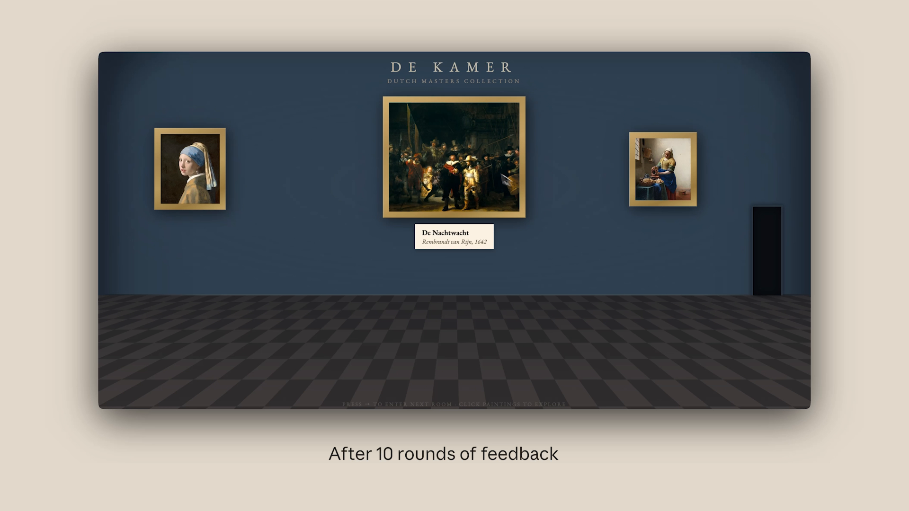
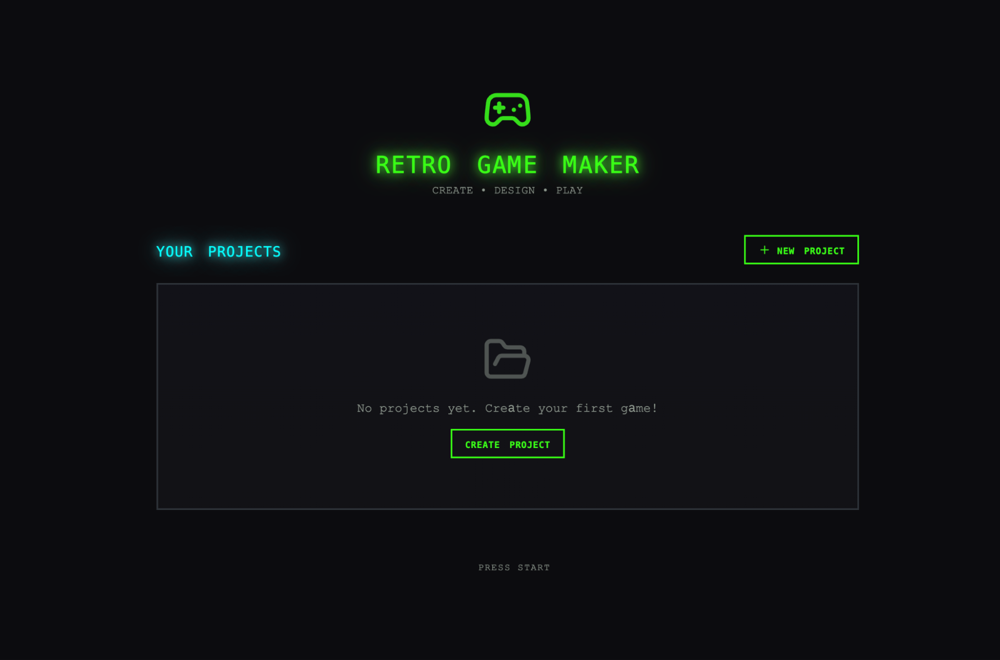
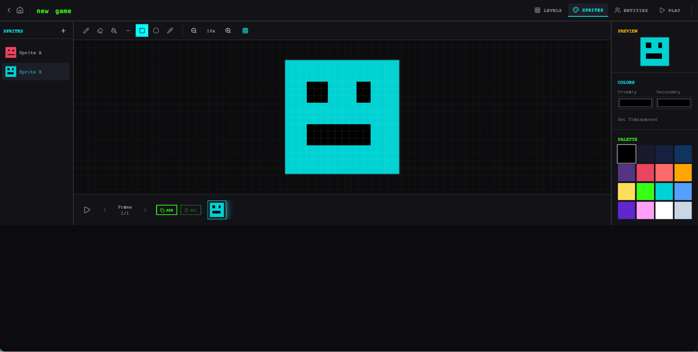
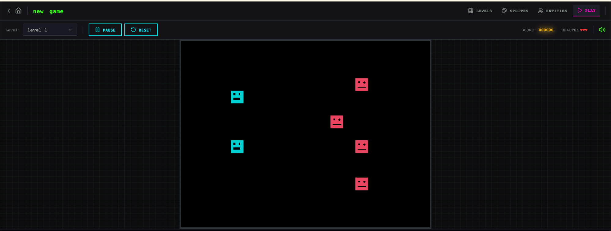
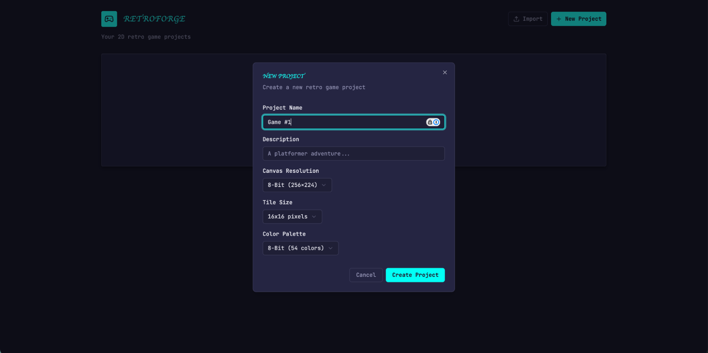
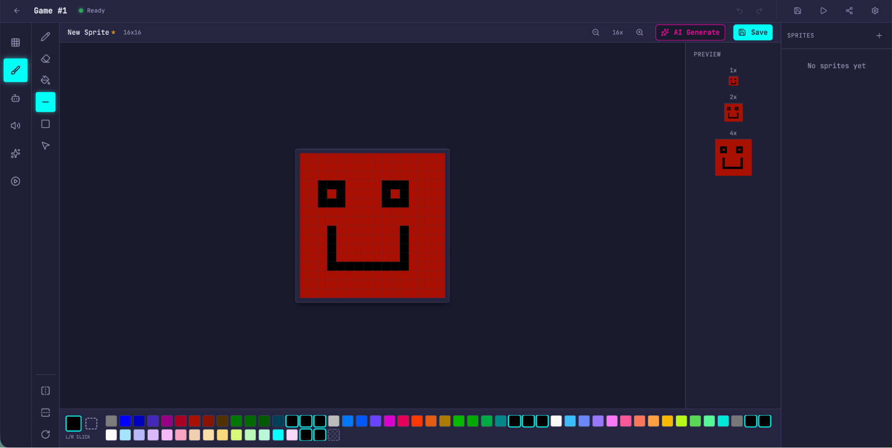
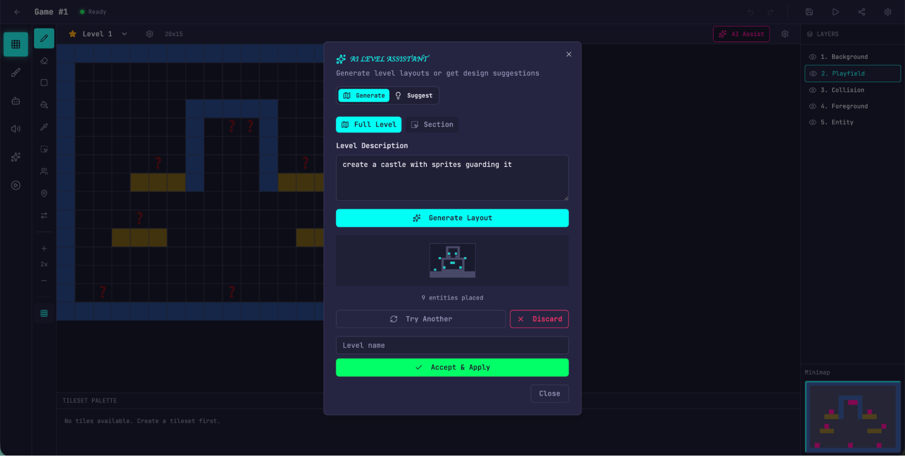
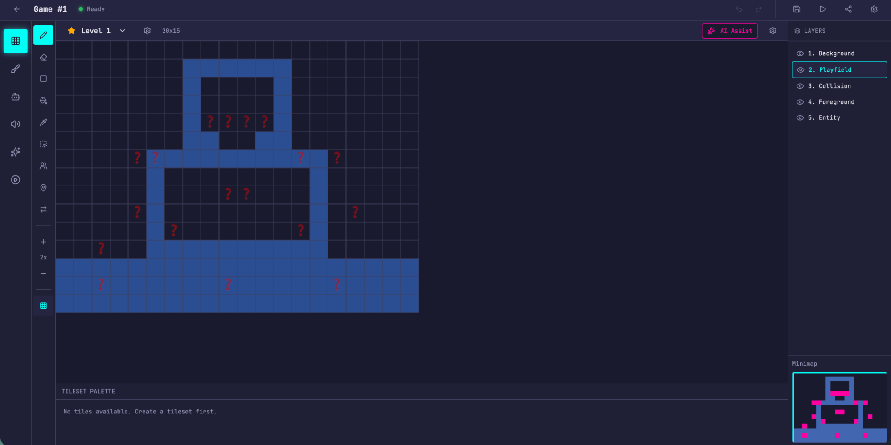
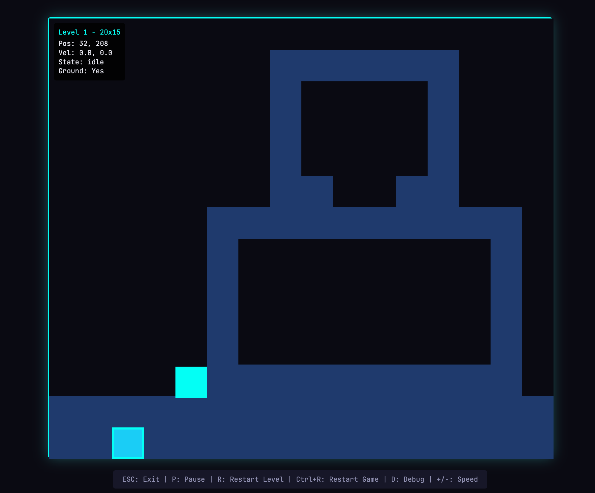
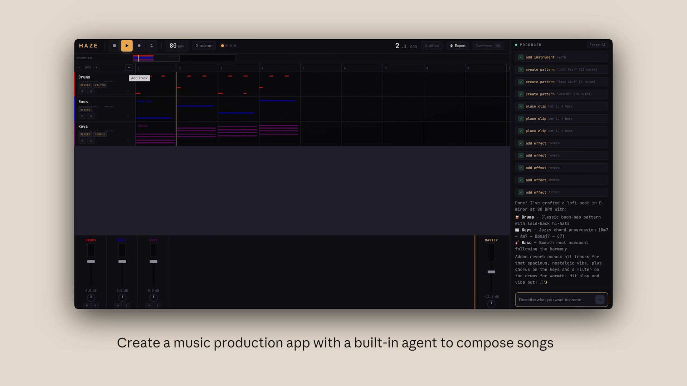

Anthropic · Research · 2026-03-24
Harness design for long-running application development为长程应用开发设计 harness：生成器 × 评估器
60 秒速览：这篇文章在说什么
译者所加，不是原文的一部分 —— 读完这 6 条，再看原文会快很多。
- 一句话结论：让负责干活的智能体和负责打分的智能体分开，是这套 harness 的一个有力抓手——主观的前端设计和有标准答案的全栈编程，都能因此从「看着还行」推到「真的能用」。
- 关键动作 1：先给主观质量写四条可评分标准（设计质量、原创性、工艺、功能性），把「美不美」变成「符不符合我们的设计原则」；再让评估器带着 Playwright MCP 真的打开网页操作、打分、写批评。
- 关键动作 2：长程任务怕两件事——上下文写满后模型跑偏，以及模型以为自己快到上限就提前收尾（上下文焦虑）。早先的 harness 用「重置上下文 + 结构化交接产物」解决它，代价是编排复杂度、token 开销与延迟；到本文这套，Opus 4.5 已不再需要重置，上下文增长改由 Claude Agent SDK 的自动压缩处理。
- 关键动作 3：三角色流水线——规划器把一句话扩成完整产品规格，生成器按冲刺逐个特性实现，评估器照「冲刺契约」里的验收标准挑错；每个标准都有硬阈值，不达标这一轮就判失败。更新版（v2）又删掉了冲刺结构，把评估器改成整轮结束时评估一次。
- 数字：solo 单智能体 20 分钟、9 美元；完整版（v1）harness 6 小时、200 美元（成本是 solo 的 20 倍以上，时间约 18 倍），但 solo 版连核心玩法都是坏的。更新版（v2）去掉冲刺结构后跑 DAW 约 3 小时 50 分、124.70 美元。
- 结论：模型变强不会让 harness 消失，只会让它移动——每个组件都在编码「模型现在做不到什么」的假设；新模型一到，就该重新压力测试、拆掉不再承重的部件。
常见搭法：一个智能体从需求一路做到尾
- 用户给一句话需求，模型自己拆任务、写代码、收尾
- 上下文写满就中断或压缩，长任务容易跑偏、提前收尾
- 同一个模型既当选手又当裁判，往往「自信地表扬」
- 结果：界面看着像做完了，核心功能其实经常是坏的
本文建议：三个角色 + 外部反馈
- 规划器：一句话 → 完整产品规格，还主动把 AI 功能设计进去
- 生成器：按冲刺逐个特性实现，每轮交出可运行的东西
- 评估器：用 Playwright 真点真用，按硬性阈值打分并写批评
- 结果：主观与客观任务都能收敛；代价是成本约 22 倍（$200 vs $9）、时间约 18 倍（6 小时 vs 20 分钟）
这张卡是译者按全文论证压缩的，不是原文；卡里的成本、时长数字都能在正文表格里找到。
读法建议：速览和对比卡是译者按正文压缩的，不是原文；正文里带虚线底线的词可悬停看术语，上标数字是译者注。原文发布于 2026-03-24，文中 Opus 4.5 / 4.6、Sonnet 4.5 是当时的模型版本。
作者同时推进两件事：让 Claude 做出高质量的前端设计，让它无需人工干预地构建完整应用。两条线都靠提示词工程与 harness 设计把表现推到远超基线，但最终都撞上天花板；于是他借 GAN 的结构设计了「生成器 + 评估器」的多智能体循环，再把同一套思路迁移到长程全栈编程。
Over the past several months I’ve been working on two interconnected problems: getting Claude to produce high-quality frontend designs, and getting it to build complete applications without human intervention. This work originated with earlier efforts on our frontend design skill and long-running coding agent harness, where my colleagues and I were able to improve Claude’s performance well above baseline through prompt engineering and harness design—but both eventually hit ceilings.
过去几个月，我一直在琢磨两个相互关联的难题：怎么让 Claude 产出高质量的前端设计，怎么让它无需人工干预就能构建出完整应用。这项工作源自我们早先的前端设计技能（frontend design skill）和长程编程智能体的 harness：靠提示词工程和 harness（运行框架）设计，我和同事曾把 Claude 的表现提升到远超基线的水平——但这两项早先的工作最终都撞上了天花板。
To break through, I sought out novel AI engineering approaches that held across two quite different domains, one defined by subjective taste, the other by verifiable correctness and usability. Taking inspiration from Generative Adversarial Networks (GANs), I designed a multi-agent structure with a generator and evaluator agent.1 Building an evaluator that graded outputs reliably—and with taste—meant first developing a set of criteria that could turn subjective judgments like “is this design good?” into concrete, gradable terms.
为了突破，我去寻找新的 AI 工程方法，要求它能在两个相当不同的领域同时成立：一个由主观审美定义，另一个由可验证的正确性和可用性定义。借鉴生成对抗网络（GAN）的思路，我设计了一套多智能体结构：一个生成器（generator）加一个评估器（evaluator）智能体（agent）。1要做出一个既能稳定打分、又懂品味的评估器，就得先定义一套标准，把「这个设计好不好？」这类主观判断，变成具体、可评分的表述。
I then applied these techniques to long-running autonomous coding, carrying over two lessons from our earlier harness work: decomposing the build into tractable chunks, and using structured artifacts to hand off context between sessions. The final result was a three-agent architecture—planner, generator, and evaluator—that produced rich full-stack applications over multi-hour autonomous coding sessions.
之后我把这些方法用到长程自主编程上，并沿用了早先 harness 工作的两条经验：把构建拆成一块块能处理的任务；用结构化产物在会话之间交接上下文。最终得到的是一个三智能体架构——规划器（planner）、生成器、评估器——它能在持续数小时的自主编程会话里，产出功能丰富的全栈（full-stack）应用。
Why naive implementations fall short为什么简单直接的做法不够用
过去两代 harness 已经证明：harness 设计能大幅提升长程编程的表现，但仍有两个顽固问题——上下文越写越满导致模型跑偏，以及自己评自己时往往稳定偏向正面。作者把这两点分开处理：前者在早先的 harness 里靠「重置上下文 + 结构化交接」，后者靠「独立的评估器」。
We've previously shown that harness design has a substantial impact on the effectiveness of long running agentic coding. In an earlier experiment, we used an initializer agent to decompose a product spec into a task list, and a coding agent that implemented the tasks one feature at a time before handing off artifacts to carry context across sessions. The broader developer community has converged on similar insights, with approaches like the "Ralph Wiggum" method using hooks or scripts to keep agents in continuous iteration cycles.2
我们之前已经展示过：harness 设计会显著影响长程 agentic 编程的效果。在早先的一次实验里，我们用一个初始化智能体（initializer agent）把产品规格（spec）拆成任务清单，再让一个编程智能体一次实现一个特性，并在会话结束时交出结构化产物来跨会话传递上下文。开发者社区也收敛到了类似的洞见：比如「Ralph Wiggum」方法，用钩子或脚本让智能体一直处在连续迭代的循环里。2
But some problems remained persistent. For more complex tasks, the agent still tends to go off the rails over time. While decomposing this issue, we observed two common failure modes with agents executing these sorts of tasks.
但有些问题一直顽固地存在。任务越复杂，智能体跑着跑着就越容易脱轨。在拆解这个问题时，我们观察到智能体执行这类任务时常见的两种失败模式。
First is that models tend to lose coherence on lengthy tasks as the context window fills (see our post on context engineering). Some models also exhibit "context anxiety," in which they begin wrapping up work prematurely as they approach what they believe is their context limit.3 Context resets—clearing the context window entirely and starting a fresh agent, combined with a structured handoff that carries the previous agent's state and the next steps—addresses both these issues.
第一，任务一长、上下文窗口（context window）被填满时，模型往往会失去连贯性（参见我们关于上下文工程（context engineering）的文章）。有些模型还会表现出「上下文焦虑（context anxiety）」：当它们觉得自己快到上下文上限时，就会提前开始收尾。3上下文重置（context reset）——把上下文整个清空、启用一个全新的智能体，再配上一份结构化交接产物，带着前一个智能体的状态和下一步计划——能同时解决这两个问题。
This differs from compaction, where earlier parts of the conversation are summarized in place so the same agent can keep going on a shortened history.4 While compaction preserves continuity, it doesn't give the agent a clean slate, which means context anxiety can still persist. A reset provides a clean slate, at the cost of the handoff artifact having enough state for the next agent to pick up the work cleanly. In our earlier testing, we found Claude Sonnet 4.5 exhibited context anxiety strongly enough that compaction alone wasn't sufficient to enable strong long task performance, so context resets became essential to the harness design. This solves the core issue, but adds orchestration complexity, token overhead, and latency to each harness run.
这和上下文压缩（compaction）不同：压缩是把对话的早期部分就地摘要，让同一个智能体带着缩短的历史继续干。4压缩保住了连续性，却没给智能体一个干净的开局，所以上下文焦虑依然可能存在。重置给了一个干净的开局，代价是交接产物里必须有足够的状态，让下一个智能体能把工作干净利落地接过去。在早先的测试中，我们发现 Claude Sonnet 4.5 的上下文焦虑已经强到单靠压缩不足以支撑出色的长任务表现，于是上下文重置成了这套 harness 设计中不可缺少的一环。这解决了核心问题，但也给每次 harness 运行增加了编排复杂度、token 开销和延迟。
A second issue, which we haven’t previously addressed, is self-evaluation. When asked to evaluate work they've produced, agents tend to respond by confidently praising the work—even when, to a human observer, the quality is obviously mediocre. This problem is particularly pronounced for subjective tasks like design, where there is no binary check equivalent to a verifiable software test. Whether a layout feels polished or generic is a judgment call, and agents reliably skew positive when grading their own work.
第二个问题我们之前没有处理过：自我评估。当被要求评价自己产出的工作时，智能体往往会自信地把作品夸一顿——即便在人类观察者看来，质量明显平庸。这个问题在「设计」这类主观任务上尤其突出，因为这里没有类似可验证软件测试那样的二元检查。一个布局是精致还是平庸，本身就是主观判断；而智能体在给自己的作品打分时，总是稳定地偏向正面。
However, even on tasks that do have verifiable outcomes, agents still sometimes exhibit poor judgment that impedes their performance while completing the task. Separating the agent doing the work from the agent judging it proves to be a strong lever to address this issue. The separation doesn't immediately eliminate that leniency on its own; the evaluator is still an LLM that is inclined to be generous towards LLM-generated outputs. But tuning a standalone evaluator to be skeptical turns out to be far more tractable than making a generator critical of its own work, and once that external feedback exists, the generator has something concrete to iterate against.
不过，就算任务有可验证的结果，智能体有时仍会判断失准，拖累自己完成任务时的表现。事实证明，把「干活的智能体」和「评判的智能体」分开，是解决这个问题的强有力杠杆。这种分离本身并不能立刻消除偏袒：评估器仍然是一个 LLM，天然倾向于对 LLM 生成的产出手下留情。但把独立的评估器调教成一个爱挑刺的角色，远比让生成器对自己的作品吹毛求疵容易得多；而一旦有了外部反馈，生成器就有了具体的靶子可以反复迭代。
Frontend design: making subjective quality gradable前端设计：让主观质量变得可评分
前端设计最能暴露「自我评估偏袒」。作者的做法：先把主观质量拆成四条可评分标准（设计质量、原创性、工艺、功能性）并给权重，再让评估器带着 Playwright MCP 真的打开页面研究后再批评，形成「生成 → 评分 → 批评 → 再生成」的循环。分数会提升但不总线性，措辞本身也塑造风格；最典型的是荷兰美术馆案例——第十轮突然把落地页改成了 3D 空间体验。
I started by experimenting on frontend design, where the self-evaluation issue was most visible. Absent any intervention, Claude normally gravitates toward safe, predictable layouts that are technically functional but visually unremarkable.
我先从前端设计入手做实验，因为自我评估问题在这里最明显。如果没有任何干预，Claude 通常会被安全、可预测的布局吸引：技术上能用，但视觉上平平无奇。
Two insights shaped the harness I built for frontend design. First, while aesthetics can’t be fully reduced to a score—and individual tastes will always vary—they can be improved with grading criteria that encode design principles and preferences. "Is this design beautiful?" is hard to answer consistently, but "does this follow our principles for good design?" gives Claude something concrete to grade against. Second, by separating frontend generation from frontend grading, we can create a feedback loop that drives the generator toward stronger outputs.
有两项洞见塑造了我为前端设计搭的这套 harness。第一，审美虽然没法完全折算成一个分数——而且个人口味总会不同——但可以用编码了设计原则与偏好的评分标准（grading criteria）来改善。「这个设计美不美？」很难有一致的答案；但「它符不符合我们这套好设计的原则？」给了 Claude 一个具体的可评分对象。第二，把前端生成与前端评分拆开，就能造出一个反馈回路，把生成器推向更强的产出。
With this in mind, I wrote four grading criteria that I gave to both the generator and evaluator agents in their prompts:
基于这个思路，我写了四条评分标准，并把它们同时写进生成器和评估器的提示词里：
- Design quality: Does the design feel like a coherent whole rather than a collection of parts? Strong work here means the colors, typography, layout, imagery, and other details combine to create a distinct mood and identity.
- Originality: Is there evidence of custom decisions, or is this template layouts, library defaults, and AI-generated patterns? A human designer should recognize deliberate creative choices. Unmodified stock components—or telltale signs of AI generation like purple gradients over white cards—fail here.
- Craft: Technical execution: typography hierarchy, spacing consistency, color harmony, contrast ratios. This is a competence check rather than a creativity check. Most reasonable implementations do fine here by default; failing means broken fundamentals.
- Functionality: Usability independent of aesthetics. Can users understand what the interface does, find primary actions, and complete tasks without guessing?
- 设计质量（Design quality）：整个设计读起来是一个连贯的整体，还是东拼西凑的一堆零件？这一项做得好，意味着颜色、字体、布局、图像等细节组合起来，能营造出独特的气氛和识别度。
- 原创性（Originality）：能看出有定制的决策吗，还是模板布局、库默认样式和 AI 生成套路？人类设计师应该能辨认出有意的创作选择。未经修改的现成组件——或者「白卡片上叠紫色渐变」这类一眼能看出 AI 生成的标志——这一项就不及格。
- 工艺（Craft）：技术执行：字体层级、间距一致性、色彩和谐、对比度。这是能力检查，不是创造力检查。大多数像样的实现默认就能过；过不了说明基本功有问题。
- 功能性（Functionality）：与美观无关的可用性。用户能看懂界面是干什么的吗？能找到主要操作吗？能不用猜就完成任务吗？
I emphasized design quality and originality over craft and functionality. Claude already scored well on craft and functionality by default, as the required technical competence tended to come naturally to the model. But on design and originality, Claude often produced outputs that were bland at best. The criteria explicitly penalized highly generic "AI slop" patterns, and by weighting design and originality more heavily it pushed the model toward more aesthetic risk-taking.
我把设计质量和原创性的权重放在了工艺和功能性之上。Claude 默认在工艺和功能性上得分已经不错，因为这类技术能力模型往往天生就有。但在设计和原创性上，Claude 经常产出顶多算平庸的结果。这套标准会明确惩罚高度模板化的「AI 套路化产物（AI slop）」；把设计和原创性的权重调高之后，模型被推向更愿意在审美上冒险。
I calibrated the evaluator using few-shot examples with detailed score breakdowns. This ensured the evaluator’s judgment aligned with my preferences, and reduced score drift across iterations.
我用带详细分数拆解的少样本示例（few-shot）来校准评估器。这确保了评估器的判断和我的偏好对齐，也减少了多轮迭代之间的分数漂移。
I built the loop on the Claude Agent SDK, which kept the orchestration straightforward. A generator agent first created an HTML/CSS/JS frontend based on a user prompt. I gave the evaluator the Playwright MCP, which let it interact with the live page directly before scoring each criterion and writing a detailed critique.5 In practice, the evaluator would navigate the page on its own, screenshotting and carefully studying the implementation before producing its assessment. That feedback flowed back to the generator as input for the next iteration. I ran 5 to 15 iterations per generation, with each iteration typically pushing the generator in a more distinctive direction as it responded to the evaluator's critique. Because the evaluator was actively navigating the page rather than scoring a static screenshot, each cycle took real wall-clock time. Full runs stretched up to four hours. I also instructed the generator to make a strategic decision after each evaluation: refine the current direction if scores were trending well, or pivot to an entirely different aesthetic if the approach wasn't working.
这个循环我搭在Claude Agent SDK上，编排逻辑因此保持得很直接。生成器智能体先根据用户提示词做出一个 HTML/CSS/JS 前端。我给评估器配上了 Playwright MCP（浏览器自动化工具），让它能直接和运行中的页面交互，然后再给每条标准打分、写详细批评。5实际运行时，评估器会自己浏览页面、截图、仔细研究实现，最后给出评估。这些反馈再流回生成器，作为下一轮迭代的输入。每次生成我跑 5 到 15 轮迭代；随着生成器不断回应评估器的批评，每一轮通常都会把它推向更有辨识度的方向。因为评估器是主动在页面上操作，而不是给一张静态截图打分，所以每个循环都实打实消耗真实时间。完整跑一轮最长能拉到四小时。我还要求生成器在每次评估后做一个策略决定：分数趋势好就打磨当前方向；如果这个方向不奏效，就彻底换一种审美。
Across runs, the evaluator's assessments improved over iterations before plateauing, with headroom still remaining. Some generations refined incrementally. Others took sharp aesthetic turns between iterations.
从多次运行看，评估器的评分会随着迭代提升，然后进入平台期，但仍有提升空间。有些生成是一点点精修出来的。另一些则在迭代之间发生剧烈的审美转向。
The wording of the criteria steered the generator in ways I didn't fully anticipate. Including phrases like "the best designs are museum quality" pushed designs toward a particular visual convergence, suggesting that the prompting associated with the criteria directly shaped the character of the output.
这些标准的措辞会以我没完全预料到的方式影响生成器。比如写进「最好的设计要有博物馆级水准」这类说法，会把设计推向某种特定的视觉趋同——这说明和标准绑在一起的提示词，直接塑造了产出的性格。
While scores generally improved over iterations, the pattern was not always cleanly linear. Later implementations tended to be better as a whole, but I regularly saw cases where I preferred a middle iteration over the last one. Implementation complexity also tended to increase across rounds, with the generator reaching for more ambitious solutions in response to the evaluator’s feedback. Even on the first iteration, outputs were noticeably better than a baseline with no prompting at all, suggesting the criteria and associated language themselves steered the model away from generic defaults before any evaluator feedback led to further refinement.
虽然分数总体上随迭代提升，但这条曲线并不总是干净的线性关系。后面的实现整体上往往更好，但我也经常遇到更喜欢中间某一轮、而不是最后一轮的情况。实现复杂度也往往一轮比一轮高，生成器会为了回应评估器反馈去尝试更激进的方案。甚至第一轮迭代的产出，就明显好过没有任何提示工程和评分标准加持的基线——这说明在评估器反馈带来进一步改进之前，评分标准和相关措辞本身就已经把模型从通用默认样式上引开了。
In one notable example, I prompted the model to create a website for a Dutch art museum. By the ninth iteration, it had produced a clean, dark-themed landing page for a fictional museum. The page was visually polished but largely in line with my expectations. Then, on the tenth cycle, it scrapped the approach entirely and reimagined the site as a spatial experience: a 3D room with a checkered floor rendered in CSS perspective, artwork hung on the walls in free-form positions, and doorway-based navigation between gallery rooms instead of scroll or click. It was the kind of creative leap that I hadn't seen before from a single-pass generation.
有个很典型的例子：我让模型给一家荷兰美术馆做网站。到第九轮迭代，它已经做出了一个干净、深色主题的虚构美术馆落地页。页面视觉上挺精致，但基本在我预期之内。然后在第十轮，它把整个方案推倒重来，把网站重新构想成一种空间体验：一个 3D 房间，棋盘格地板用 CSS 透视渲染出来，画作随意挂在墙上，房间之间靠门洞穿行，而不是滚动或点击。这样的创意跳跃，我在单次生成里从没见过。

美术馆视频：10 轮迭代后变成可走动的 3D 展厅 视频已内嵌本页（海报取其中一帧）：经过 10 轮反馈，荷兰美术馆网站没有继续打磨落地页，而是改造成可走进的 3D 展厅——DE KAMER 品牌悬在深蓝墙上，三幅荷兰名画挂在墙上、中间的《夜巡》配展签，黑白棋盘地板做出纵深，右侧门洞通往下一间展厅。
▶ 视频按需加载（1.7 MB，浏览器 Range 请求，点击后才下载）。 原站在线版 ↗
这张图怎么看（4 条）
- 视频就在本页播放（点 ▶ 即可），海报是其中一帧；先看它，再读下面的文字说明。
- 正中《夜巡》下方挂着白底展签 De Nachtwacht / Rembrandt van Rijn, 1642，画名、作者与年份都齐全，展签信息完整。
- 棋盘地板近大远小的斜线是 CSS 透视做出来的，正是原文说的 3D room with a checkered floor，不是贴图。
- 底部提示 PRESS → 进入下一间展厅、CLICK PAINTINGS 可探索，导航不再靠滚动，而是靠走动与点画。
一句话：这一版的价值不在页面更精致，而在直接换了一种交互形态。
Scaling to full-stack coding扩展到全栈编程
把 GAN 式循环搬到全栈开发：规划器把一句话扩成完整产品规格，生成器按冲刺逐个特性实现，评估器用 Playwright 真点真用、按硬阈值判分。三个角色靠「写文件」沟通，每个冲刺前先谈冲刺契约。Opus 4.5 跑完整版（v1）harness 6 小时、200 美元，产出质量肉眼可见地好过 20 分钟、9 美元的 solo 版。
With these findings in hand, I applied this GAN-inspired pattern to full-stack development. The generator-evaluator loop maps naturally onto the software development lifecycle, where code review and QA serve the same structural role as the design evaluator.
有了这些发现，我把这个受 GAN 启发的模式用到全栈开发上。生成器-评估器循环很自然地对应到软件开发生命周期：代码评审和质检（QA）在其中扮演的结构性角色，正对应设计评估器。
The architecture架构
In our earlier long-running harness, we had solved for coherent multi-session coding with an initializer agent, a coding agent that worked one feature at a time, and context resets between sessions. Context resets were a key unlock: the harness used Sonnet 4.5, which exhibited the “context anxiety” tendency mentioned earlier. Creating a harness that worked well across context resets was key to keeping the model on task. Opus 4.5 largely removed that behavior on its own, so I was able to drop context resets from this harness entirely. The agents were run as one continuous session across the whole build, with the Claude Agent SDK’s automatic compaction handling context growth along the way.
在早先的长程 harness里，我们用初始化智能体、一次只做一个特性的编码智能体，以及会话之间的上下文重置，解决了跨多个会话的一致编程问题。上下文重置是一个关键突破：那套 harness 用的是 Sonnet 4.5，它表现出了前面提到的「上下文焦虑」倾向。打造一套能在上下文重置之间运转良好的 harness，是让模型不偏离任务的关键。Opus 4.5 基本靠自己就去掉了这种行为，所以我能把这套 harness 里的上下文重置整个删掉。整个构建过程中，各个智能体被当作一个连续会话运行，由 Claude Agent SDK 的自动压缩顺带处理上下文增长。
For this work I built on the foundation from the original harness with a three-agent system, with each agent addressing a specific gap I'd observed in prior runs. The system contained the following agent personas:
在这项工作里，我在前作 harness 的基础上搭了一个三智能体系统，每个智能体针对我在先前运行中观察到的一个具体缺口。系统包含以下三个智能体角色：
Planner: Our previous long-running harness required the user to provide a detailed spec upfront. I wanted to automate that step, so I created a planner agent that took a simple 1-4 sentence prompt and expanded it into a full product spec. I prompted it to be ambitious about scope and to stay focused on product context and high level technical design rather than detailed technical implementation. This emphasis was due to the concern that if the planner tried to specify granular technical details upfront and got something wrong, the errors in the spec would cascade into the downstream implementation. It seemed smarter to constrain the agents on the deliverables to be produced and let them figure out the path as they worked. I also asked the planner to find opportunities to weave AI features into the product specs. (See example in the Appendix at the bottom.)
规划器（Planner）：我们之前的长程 harness 要求用户预先提供一份详细的产品规格。我想把这一步自动化，于是做了一个规划器智能体：它接收一句到四句的简单提示，把它扩写成完整的产品规格。我在提示词里要求它在范围上大胆一些，同时聚焦产品背景和高层技术设计，而不是细颗粒度的技术实现。之所以这样强调，是担心规划器如果提前把技术细节规定得太细、又出了错，规格里的错误会一路级联到下游实现里。更聪明的做法似乎是：只约束智能体要交付什么，让它们在干活过程中自己摸索路径。我还要求规划器寻找机会，把 AI 功能织进产品规格里。（示例见文末附录。）
Generator: The one-feature-at-a-time approach from the earlier harness worked well for scope management. I applied a similar model here, instructing the generator to work in sprints, picking up one feature at a time from the spec. Each sprint implemented the app with a React, Vite, FastAPI, and SQLite (later PostgreSQL) stack, and the generator was instructed to self-evaluate its work at the end of each sprint before handing off to QA. It also had git for version control.
生成器（Generator）：早先 harness 里「一次一个特性」的做法，在范围管理上效果很好。我在这里套用了类似的模式：让生成器按冲刺（sprint）推进，每次从规格里拿一个特性来做。每个冲刺用 React、Vite、FastAPI 和 SQLite（后来换成 PostgreSQL）的技术栈来实现应用；生成器被要求在每次冲刺结束、交给质检之前先自我评估。它还有 git 做版本控制。
Evaluator: Applications from earlier harnesses often looked impressive but still had real bugs when you actually tried to use them. To catch these, the evaluator used the Playwright MCP to click through the running application the way a user would, testing UI features, API endpoints, and database states. It then graded each sprint against both the bugs it had found and a set of criteria modeled on the frontend experiment, adapted here to cover product depth, functionality, visual design, and code quality. Each criterion had a hard threshold, and if any one fell below it, the sprint failed and the generator got detailed feedback on what went wrong.
评估器（Evaluator）：早先 harness 做出来的应用常常看着很唬人，但真上手用的时候还是有实实在在的 bug。为了抓住这些问题，评估器用 Playwright MCP 像用户一样把运行中的应用点一遍，测试 UI 功能、API 端点和数据库状态。然后它同时对照两类东西给每个冲刺打分：自己发现的 bug，以及一套参照前端实验改造的评分标准——这套标准覆盖产品深度、功能、视觉设计和代码质量。每条标准都有硬性阈值；只要有一项低于阈值，这个冲刺就判失败，生成器会收到详细的反馈，说明哪里出了问题。
Before each sprint, the generator and evaluator negotiated a sprint contract: agreeing on what "done" looked like for that chunk of work before any code was written.6 This existed because the product spec was intentionally high-level, and I wanted a step to bridge the gap between user stories and testable implementation. The generator proposed what it would build and how success would be verified, and the evaluator reviewed that proposal to make sure the generator was building the right thing. The two iterated until they agreed.
每个冲刺开始前，生成器和评估器会先谈一份冲刺契约（sprint contract）：在写任何代码之前，就「这一块工作做成什么样算完成」达成一致。6之所以有这一步，是因为产品规格是刻意写在高层的，我需要一个环节来弥合「用户故事」与「可测试的实现」之间的落差。生成器提出自己打算做什么、以及怎么验证成功；评估器审核这份提案，确保生成器在做对的东西。双方反复来回，直到谈拢为止。
Communication was handled via files: one agent would write a file, another agent would read it and respond either within that file or with a new file that the previous agent would read in turn. The generator then built against the agreed-upon contract before handing the work off to QA. This kept the work faithful to the spec without over-specifying implementation too early.
沟通通过文件完成：一个智能体写文件，另一个智能体读文件，然后或者在同一个文件里回复，或者新建一个文件、让前一个智能体接着读。然后生成器按谈好的契约开始构建，做完再交给质检。这样既保证工作不偏离规格，又不会过早把实现细节规定死。
Running the harness运行这套 harness
For the first version of this harness, I used Claude Opus 4.5, running user prompts against both the full harness and a single-agent system for comparison. I used Opus 4.5 since this was our best coding model when I began these experiments.
这套 harness 的第一个版本，我用了 Claude Opus 4.5；同一个用户提示词，分别跑「完整版（v1）harness」和「单智能体系统」，以便对比。之所以用 Opus 4.5，是因为我开始做这些实验时，它是我们最强的编程模型。
I wrote the following prompt to generate a retro video game maker:
我写了下面这段提示词，让模型生成一个复古游戏制作器：
Create a 2D retro game maker with features including a level editor, sprite editor, entity behaviors, and a playable test mode.
做一个 2D 复古游戏制作器，功能包括关卡编辑器、精灵编辑器、实体行为，以及可玩的测试模式。
The table below shows the harness type, length it ran for, and the total cost.
下表展示了 harness 类型、运行时长和总成本。
| Harnessharness 方式 | Duration时长 | Cost成本 |
|---|---|---|
| Solo单智能体（solo） | 20 min20 分钟 | $99 美元 |
| Full harness完整版（v1）harness | 6 hr6 小时 | $200200 美元 |
The harness was over 20x more expensive, but the difference in output quality was immediately apparent.7
完整 harness 贵了 20 倍以上，但产出质量的差距一眼就能看出来。7
I was expecting an interface where I could construct a level and its component parts (sprites, entities, tile layout) then hit play to actually play the level. I started by opening the solo run’s output, and the initial application seemed in line with those expectations.
我期待的界面是：能搭出一个关卡和它的组成部分（精灵、实体、瓦片布局），然后按下播放，真的把这一关玩起来。我先打开 solo 那版的产出，初看之下应用似乎符合这些预期。
As I clicked through, however, issues started to emerge. The layout wasted space, with fixed-height panels leaving most of the viewport empty. The workflow was rigid. Trying to populate a level prompted me to create sprites and entities first, but nothing in the UI guided me toward that sequence. More to the point, the actual game was broken. My entities appeared on screen but nothing responded to input. Digging into the code revealed that the wiring between entity definitions and the game runtime was broken, with no surface indication of where.
但当我一路点下去，问题开始冒出来。布局浪费空间：固定高度的面板让大部分视口空着。工作流很死板。我想往关卡里放东西时，它要求我先创建精灵和实体，但界面里没有任何地方引导我按这个顺序走。更关键的是，游戏本身是坏的。我的实体出现在屏幕上，但任何输入都没有反应。翻代码才发现：实体定义和游戏运行时之间的连接是断的，而表面上看不出断在哪。

Solo 版的初始界面：能打开，但空空荡荡 Solo 版只花 20 分钟、9 美元就做出了这个游戏编辑器，首页是像素风大标题：巨大的项目区里只有一句「还没有项目」，右上角的 + NEW PROJECT 和底部的 PRESS START 都像摆设，整页大面积留白。
原文图注：Initial screen when opening the app created by the solo harness.
这张图怎么看（3 条）
- 顶部绿色像素字 RETRO GAME MAKER 和副标语 CREATE · DESIGN · PLAY，标明这是做游戏的工具而非游戏本身。
- 中间 YOUR PROJECTS 区空着，只留一句 No projects yet 和 CREATE PROJECT 按钮，也没有任何新手引导说明下一步。
- 对照 fig4：完整 harness 版有 Import 与建项目表单，这版只有 + NEW PROJECT 和底部 PRESS START 两个孤立入口。
一句话：Solo 版首页能打开，但空荡得像半成品，离可用还差得远。

Solo 版精灵编辑器：画得出来，但工具摊在一起 Solo 版应用里的精灵编辑器：左侧素材列表只有两个精灵，中间网格上是一张 16×16 的青色笑脸，右侧挤着预览、配色和调色板，底栏是单帧时间轴与新增、删除按钮，四块功能平铺在一起、没有主次。
原文图注：Creating a sprite in the sprite editor made by the solo harness
这张图怎么看（4 条）
- 顶部四个标签 LEVELS、SPRITES、ENTITIES、PLAY 平铺成一级入口，当前 SPRITES 高亮，功能是四等分摊开的。
- 左侧 SPRITES 列表只有 Sprite A 和 Sprite B，唯一的新建入口是旁边的小加号，素材一多就挤成一列。
- 右侧 COLORS 只有 Primary、Secondary 两个色块和 Set Transparent，取色得回到底部 PALETTE 小方格逐格点选，色组很有限。
- 底栏 Frame 1/1 配 ADD、DEL 说明支持帧动画，但只有单帧画面，动画效果要靠自己来回切换检查。
一句话：能画精灵、能做单帧动画，但工具按面板摊开，谈不上好用。

Solo 版试玩：场面画好了，角色却动不了 Solo 版点进 PLAY 试玩：Level 下拉框停在 level 1，暂停、重置按钮与 SCORE、HEALTH 状态栏都在，场上有两块青色方块和四只粉色小怪，可角色对键盘毫无反应、画面毫无变化，正是原文说的「实体出现了，玩法没接通」。
原文图注：Trying unsuccessfully to play the level I created
这张图怎么看（4 条）
- 顶栏 PLAY 标签是选中态，左侧 Level: level 1 下拉框与 PAUSE、RESET 说明已经进入试玩页面，不是编辑器。
- 右上 SCORE: 000000 和 HEALTH: 红心正常显示，说明界面状态栏没问题，失败的是输入与游戏逻辑。
- PLAY 试玩画面里排着两块青色方块和四只粉色小怪，画面不报错，但按键后角色不动、画面无变化，玩不下去。
- PLAY 模式的场地缩在中央、左右各留大片灰色网格，也印证了原文对布局浪费空间的批评。
一句话：solo 版最致命的地方：界面像游戏，实际根本玩不了，核心玩法是坏的。
After evaluating the solo run, I turned my attention to the harness run. This run started from the same one-sentence prompt, but the planner step expanded that prompt into a 16-feature spec spread across ten sprints. It went well beyond what the solo run attempted. In addition to the core editors and play mode, the spec called for a sprite animation system, behavior templates, sound effects and music, an AI-assisted sprite generator and level designer, and game export with shareable links. I gave the planner access to our frontend design skill, which it read and used to create a visual design language for the app as part of the spec. For each sprint, the generator and evaluator negotiated a contract defining the specific implementation details for the sprint, and the testable behaviors that would be tested to verify completion.
评估完 solo 版之后，我把注意力转向 harness 版。这一版从同一句提示词出发，但规划器那一步把它扩成了一份包含 16 个特性、铺在十个冲刺里的产品规格。这远远超出了 solo 版尝试的范围。除了核心编辑器和播放模式，规格还要求有精灵动画系统、行为模板、音效与音乐、AI 辅助的精灵生成器和关卡设计器，以及带分享链接的游戏导出。我让规划器读到了我们的前端设计技能，它读完并用它为应用设计了一套视觉设计语言，作为规格的一部分。每个冲刺前，生成器和评估器都会谈一份契约，明确这个冲刺的具体实现细节，以及用来验证完成的、可测试的行为。
The app immediately showed more polish and smoothness than the solo run. The canvas used the full viewport, the panels were sized sensibly, and the interface had a consistent visual identity that tracked the design direction from the spec. Some of the clunkiness I'd seen in the solo run did remain—the workflow still didn't make it clear that you should build sprites and entities before trying to populate a level, and I had to figure that out by poking around. This read as a gap in the base model’s product intuition rather than something the harness was designed to address, though it did suggest a place where targeted iteration inside the harness could help to further improve output quality.
这个应用一上来就比 solo 版更精致、更流畅。画布用满了整个视口，面板尺寸合理，界面也有一套统一的视觉风格，和规格里的设计方向保持一致。不过 solo 版里那种笨重感有一部分还在——工作流仍然没讲清楚：应该先建精灵和实体，再去填充关卡；这一点我是自己到处点才弄明白的。这更像是基础模型产品直觉上的缺口，而不是这套 harness 被设计来解决的事；不过它确实提示了一个方向：在 harness 内部做有针对性的迭代，也许能进一步提升产出质量。
Working through the editors, the new run's advantages over solo became more apparent. The sprite editor was richer and more fully featured, with cleaner tool palettes, a better color picker, and more usable zoom controls.
挨个用过编辑器之后，新版相对 solo 的优势更明显了。精灵编辑器更丰富、功能更齐全：工具面板更干净，取色器更好用，缩放控件也更顺手。
Because I'd asked the planner to weave AI features into its specs, the app also came with a built-in Claude integration that let me generate different parts of the game through prompting. This significantly sped up the workflow.
因为我要求规划器把 AI 功能织进规格，这个应用还自带 Claude 集成，让我可以通过提示词生成游戏的不同部分。这显著加快了工作流。

完整 harness 版：新建项目有正经表单 完整 harness 版应用 RETROFORGE 的首页：点右上角新建项目会弹出表单，可填名称与描述，并选分辨率、图块尺寸和调色板，默认值都替用户想好了，和 solo 版那个空荡荡的首页形成鲜明对照。
原文图注：Initial screen: Creating a new game, in the app built with the full harness
这张图怎么看（4 条）
- 顶部左侧 RETROFORGE 标志配副标题，右侧并排 Import 与 + New Project 两个入口，入口区分清楚。
- 弹窗里 Project Name 预填 Game #1，Description 留灰字占位，一看就知道该往下填，表单有引导，不会让人卡住。
- 三个下拉框分别预设 8-Bit (256×224)、16x16 pixels、8-Bit (54 colors)，技术选项被收成默认值，不用自己查参数。
- 右下 Cancel 暗、Create Project 亮，主次分明；背后项目区空着，正是初始界面的样子，等着被填满。
一句话：从新建项目这一步起，完整 harness 版就比 solo 版专业得多，也更像成品。

完整 harness 版精灵编辑器：工具排成一条流水线 同一个画精灵任务，完整 harness 版的编辑器清爽得多：顶部有 AI 生成与保存按钮，左侧竖排画具，中央红脸精灵同步显示在右侧三档预览里，底部是一条横贯窗口的调色板。
原文图注：The sprite editor felt cleaner and easier to use
这张图怎么看（4 条）
- 顶栏 New Sprite * 16x16 的星号表示尚未保存，右边并排的 AI Generate 与 Save 是 solo 版没有的两个动作。
- 同一张红色方块笑脸同时出现在右侧 PREVIEW 的 1x、2x、4x 三档中，放大观感一眼可比。
- 底部调色板横贯整个窗口、色块排成两行，左下角标着 L/R CLICK：左键上色，右键取色或擦除。
- 右侧 SPRITES 面板写着 No sprites yet，说明这是新建未保存的精灵，素材库入口被收进右栏。
一句话：同样画精灵，完整 harness 版把工具、预览、保存排成了一条顺手流水线。

AI 关卡助手：一句话生成城堡布局（提要求时） 完整 harness 版弹出 AI LEVEL ASSISTANT 对话框：在描述框里用英文要求造一座有守卫精灵的城堡，点生成布局后先给缩略图与实体数量，不满意可重试或丢弃，满意才应用到关卡。
原文图注：Using the built in AI feature to generate the level
这张图怎么看（4 条）
- 弹窗标题 AI LEVEL ASSISTANT 下写着一句说明：既能生成关卡布局，也能给设计建议。
- 在 Level Description 描述框里已经写好一句英文需求，下方大按钮 Generate Layout 负责执行并生成预览。
- 缩略图下方标着 9 entities placed，Try Another 可重来、Discard 可丢弃，结果先试后定不改关卡，保留选择权。
- 背景关卡是 20x15 网格，右栏 LAYERS 的 2. Playfield 高亮，左下角 TILESET PALETTE 还提示没有图块，图块库还是空的。
一句话：AI 生成关卡被做成可预览、可重来的对话框，不是黑箱一键替换。

同一功能的下一步：生成结果落到画布上 还是 AI 生成关卡，但这张是点下 Accept & Apply 之后的画面：城堡的塔楼与城墙已经变成蓝色图块铺在 20x15 网格上，红色问号是 AI 生成的标记，右下 Minimap 同步显示整张布局，AI 弹窗已经关闭。
原文图注：Using the built in AI feature to generate the level
这张图怎么看（4 条）
- 画布上蓝色图块拼出带城垛的城堡：中间塔楼、两侧城墙和底部长条，对应上一张说的 castle。
- 画布上既有蓝色城堡图块，也散布着红色问号标记；右栏 LAYERS 把 Background、Playfield、Collision、Foreground、Entity 分成五层。
- 右下 Minimap 镶着青色边框，蓝底粉点正是同一张关卡的小地图，用来把握整体结构。
- 右上 AI Assist 按钮还在、画布却没有弹窗，说明这一轮生成已经应用，接下来可直接编辑或试玩。
一句话：图6 是提要求的对话框，图7 是它落到画布上的结果，两张要连着看。

试玩完整 harness 生成的关卡：角色真的能动了 完整 harness 版 PLAY 模式：左上角调试面板显示当前关卡、坐标、速度与是否踩地，说明角色真的站在地面上、物理循环在跑；深蓝城堡关卡与青色小方块角色就位，底部还列着快捷键。
原文图注：Playing the game I generated
这张图怎么看（4 条）
- 左上调试面板 Level 1 - 20x15 与 Pos: 32, 208 会随角色移动变化，是物理真跑起来的最直接证据。
- 同一面板里 State: idle、Ground: Yes 表示角色静止且踩在地面上，Vel: 0.0, 0.0 说明速度归零，不是卡死。
- PLAY 模式里两块青色小方块是游戏对象，其中一块贴着平台边缘、看起来和地形有重叠；深蓝色大块是城堡地形。
- 底部提示条把 ESC 退出、P 暂停、R 重开关卡、Ctrl+R 重开游戏、D 调试等快捷键都列了出来。
一句话：同一句提示词，完整 harness 版把游戏做到了能玩，这是最大的差别。
The biggest difference was in play mode. I was actually able to move my entity and play the game. The physics had some rough edges—my character jumped onto a platform but ended up overlapping with it, which felt intuitively wrong—but the core thing worked, which the solo run did not manage. After moving around a bit, I did hit some limitations with the AI’s game level construction. There was a large wall that I wasn’t able to jump past, so I was stuck. This suggested there were some common sense improvements and edge cases that the harness could handle to further refine the app.
最大的差别在播放模式。我真的能移动实体、把游戏玩起来了。物理有些粗糙——我的角色跳到平台上，最后却和平台重叠在一起，直觉上就不对——但核心功能是通的，而 solo 版连这都没做到。走动了一会儿之后，我确实撞上了 AI 关卡构筑的一些局限。有一堵很大的墙我跳不过去，于是卡住了。这说明还有一些常识性的改进和边界情况，harness 可以处理，从而进一步打磨这个应用。
Reading through the logs, it was clear that the evaluator kept the implementation in line with the spec. Each sprint, it walked through the sprint contract's test criteria and exercised the running application through Playwright, filing bugs against anything that diverged from expected behavior. The contracts were granular—Sprint 3 alone had 27 criteria covering the level editor—and the evaluator's findings were specific enough to act on without extra investigation. The table below shows several examples of issues our evaluator identified:
翻日志可以清楚看到，评估器一直让实现贴着规格走。每个冲刺，它都会过一遍冲刺契约里的测试标准，通过 Playwright 把运行中的应用实际操作一遍，凡是偏离预期行为的地方都登记为 bug。这些契约非常细——光是冲刺 3 就有 27 条覆盖关卡编辑器的标准——而且评估器的发现足够具体，不用再额外调查就能直接动手修。下表列出几个评估器发现的问题示例：
| Contract criterion契约标准 | Evaluator finding评估器的发现 |
|---|---|
| Rectangle fill tool allows click-drag to fill a rectangular area with selected tile矩形填充工具允许通过点击拖拽，用选中的瓦片填满一块矩形区域 | FAIL — Tool only places tiles at drag start/end points instead of filling the region. fillRectangle function exists but isn't triggered properly on mouseUp.失败 —— 工具只在拖拽的起点和终点放瓦片，而不是填满整个区域。fillRectangle 函数是存在的，但没有在 mouseUp 时被正确触发。 |
| User can select and delete placed entity spawn points用户可以选择并删除已放置的实体生成点 | FAIL — Delete key handler at LevelEditor.tsx:892 requires both selection and selectedEntityId to be set, but clicking an entity only sets selectedEntityId. Condition should be selection || (selectedEntityId && activeLayer === 'entity').失败 —— LevelEditor.tsx:892 处的 Delete 键处理逻辑要求 selection 和 selectedEntityId 同时被设置，但点击实体只会设置 selectedEntityId。条件应该是 selection || (selectedEntityId && activeLayer === 'entity')。 |
| User can reorder animation frames via API用户可以通过 API 重排序动画帧 | FAIL — PUT /frames/reorder route defined after /{frame_id} routes. FastAPI matches 'reorder' as a frame_id integer and returns 422: "unable to parse string as an integer."失败 —— PUT /frames/reorder 路由定义在 /{frame_id} 这类路由之后。FastAPI 会把 'reorder' 当作 frame_id 的整数来匹配，于是返回 422：「无法把字符串解析为整数」。 |
Getting the evaluator to perform at this level took work. Out of the box, Claude is a poor QA agent. In early runs, I watched it identify legitimate issues, then talk itself into deciding they weren't a big deal and approve the work anyway. It also tended to test superficially, rather than probing edge cases, so more subtle bugs often slipped through. The tuning loop was to read the evaluator's logs, find examples where its judgment diverged from mine, and update the QAs prompt to solve for those issues. It took several rounds of this development loop before the evaluator was grading in a way that I found reasonable. Even then, the harness output showed the limits of the model’s QAing capabilities: small layout issues, interactions that felt unintuitive in places, and undiscovered bugs in more deeply nested features that the evaluator hadn't exercised thoroughly. There was clearly more verification headroom to capture with further tuning. But compared to the solo run, where the central feature of the application simply didn't work, the lift was obvious.
让评估器达到这个水平是花了功夫的。开箱即用的 Claude 是个糟糕的质检（QA）智能体。在早期运行里，我看着它先识别出真问题，然后自己把自己说服：这些不算大事，于是照样批准通过。它还倾向于浅层测试，而不是去探边界情况，所以更隐蔽的 bug 经常漏过去。调优循环是这样的：读评估器的日志，找出它判断和我分歧的例子，然后改质检的提示词来解决这类问题。这样迭代了好几轮，评估器的打分方式才变得让我觉得合理。即便如此，harness 的产出还是暴露了模型质检能力的上限：小的布局问题、有些地方操作起来不直观，以及更深的嵌套功能里那些评估器没有充分演练到、因而没被发现的 bug。显然还有更多验证空间，等着通过进一步调优去拿到。但和 solo 版——应用的核心功能干脆就是坏的——相比，提升是显而易见的。
Iterating on the harness迭代改进这套 harness
The first set of harness results was encouraging, but it was also bulky, slow, and expensive. The logical next step was to find ways to simplify the harness without degrading its performance. This was partly common sense and partly a function of a more general principle: every component in a harness encodes an assumption about what the model can't do on its own, and those assumptions are worth stress testing, both because they may be incorrect, and because they can quickly go stale as models improve. Our blog post Building Effective Agents frames the underlying idea as "find the simplest solution possible, and only increase complexity when needed," and it's a pattern that shows up consistently for anyone maintaining an agent harness.
第一套 harness 的结果令人鼓舞，但它也臃肿、慢、贵。顺理成章的下一步，是找到简化这套 harness、又不让性能下降的办法。这一部分靠常识，一部分来自一条更普遍的原则：harness 里的每个组件，都在编码一个「模型自己做不到什么」的假设；这些假设值得反复做压力测试——既因为它们可能本来就是错的，也因为模型一进步，它们很快就会过时。我们的博客文章《Building Effective Agents》把背后的思路概括为「找到尽可能简单的方案，只在需要时才增加复杂度」——任何维护智能体 harness 的人都会反复遇到这个模式。
In my first attempt to simplify, I cut the harness back radically and tried a few creative new ideas, but I wasn't able to replicate the performance of the original. It also became difficult to tell which pieces of the harness design were actually load-bearing, and in what ways. Based on that experience, I moved to a more methodical approach, removing one component at a time and reviewing what impact it had on the final result.
我第一次尝试简化时，把 harness 大刀阔斧地砍了一通，还试了几个有创意的新点子，但没能复现原来的表现。同时也变得很难判断：这套 harness 设计里到底哪些部分是真正承重（load-bearing）的，又以什么方式承重。基于这次经验，我改用更有条理的做法：一次只移除一个组件，再看它对最终结果有什么影响。
As I was going through these iteration cycles, we also released Opus 4.6, which provided further motivation to reduce harness complexity. There was good reason to expect 4.6 would need less scaffolding than 4.5 did. From our launch blog: "[Opus 4.6] plans more carefully, sustains agentic tasks for longer, can operate more reliably in larger codebases, and has better code review and debugging skills to catch its own mistakes." It also improved substantially on long-context retrieval. These were all capabilities the harness had been built to supplement.
就在我走这些迭代循环的时候，我们又发布了 Opus 4.6，这进一步给了我们削减 harness 复杂度的动力。有充分理由预期：4.6 需要的脚手架（scaffolding）会比 4.5 少。我们发布博客里写道：「[Opus 4.6] 规划更仔细，能把 agentic 任务维持得更久，在更大的代码库里运行得更可靠，也有更好的代码评审和调试能力来抓自己的错误。」它在长上下文检索上也有大幅提升。这些全都是这套 harness 当初被造出来要补足的能力。
Removing the sprint construct移除冲刺结构
I started by removing the sprint construct entirely. The sprint structure had helped to decompose work into chunks for the model to work coherently. Given the improvements in Opus 4.6, there was good reason to believe that the model could natively handle the job without this sort of decomposition.
我先从彻底移除冲刺结构开始。冲刺结构原本有助于把工作拆成块，让模型能连贯地做完。考虑到 Opus 4.6 的进步，有充分理由相信：不用这种拆解，模型也能原生地把活干好。
I kept both the planner and evaluator, as each continued to add obvious value. Without the planner, the generator under-scoped: given the raw prompt, it would start building without first speccing its work, and end up creating a less feature-rich application than the planner did.
我保留了规划器和评估器，因为它们各自都继续带来明显的价值。没有规划器时，生成器会把范围做小：拿到原始提示词就直接开始构建，没有先给工作做规格，最终做出来的应用不如有规划器时那么功能丰富。
With the sprint construct removed, I moved the evaluator to a single pass at the end of the run rather than grading per sprint. Since the model was much more capable, it changed how load-bearing the evaluator was for certain runs, with its usefulness depending on where the task sat relative to what the model could do reliably on its own. On 4.5, that boundary was close: our builds were at the edge of what the generator could do well solo, and the evaluator caught meaningful issues across the build. On 4.6, the model's raw capability increased, so the boundary moved outward. Tasks that used to need the evaluator's check to be implemented coherently were now often within what the generator handled well on its own, and for tasks within that boundary, the evaluator became unnecessary overhead. But for the parts of the build that were still at the edge of the generator’s capabilities, the evaluator continued to give real lift.
移除冲刺结构后，我把评估器改成在整轮运行结束时做一次评估，而不是每个冲刺都评分。因为模型能力强了很多，评估器在某些运行里到底有多大作用也变了：这取决于任务相对「模型能独立可靠完成的范围」落在哪一侧。在 4.5 上，这条能力边界离任务很近：我们的构建正好卡在生成器单干能力的边缘，评估器在整个构建过程中都抓到了有意义的问题。到 4.6，模型的原始能力提升了，边界就向外移了。过去需要评估器把关才能实现得连贯的任务，现在往往落在生成器自己就能处理好的范围内；边界之内的任务，评估器就成了不必要的开销。但对构建里那些仍处在生成器能力边缘的部分，评估器依然带来了实在的提升。
The practical implication is that the evaluator is not a fixed yes-or-no decision. It is worth the cost when the task sits beyond what the current model does reliably solo.
实际含义是：评估器不是一个固定的「要不要」决策。当任务超出当前模型单干能稳定做到的范围时，它才值得这份成本。
Alongside the structural simplification, I also added prompting to improve how the harness built AI features into each app, specifically getting the generator to build a proper agent that could drive the app's own functionality through tools. That took real iteration, since the relevant knowledge is recent enough that Claude's training data covers it thinly. But with enough tuning, the generator was building agents correctly.
除了结构简化，我还加了提示词，改进 harness 把 AI 功能做进每个应用的方式——具体说，就是让生成器构建一个像样的智能体，能通过工具驱动应用自身的功能。这花了不少迭代，因为相关知识足够新，Claude 的训练数据覆盖得很薄。但经过足够多的调优，生成器能正确地把智能体建出来了。
Results from the updated harness更新版 harness 的结果
To put the updated harness to the test, I used the following prompt to generate a Digital Audio Workstation (DAW), a music production program for composing, recording, and mixing songs:
为了测试更新后的 harness，我用下面这段提示词生成一个数字音频工作站（DAW）——一种用来作曲、录音、混音的音乐制作程序：
Build a fully featured DAW in the browser using the Web Audio API.
用 Web Audio API 在浏览器里构建一个功能完整的 DAW。
The run was still lengthy and expensive, at about 4 hours and $124 in token costs.
这次运行依然长且贵：大约 4 小时，token 成本 124 美元。
Most of the time went to the builder, which ran coherently for over two hours without the sprint decomposition that Opus 4.5 had needed.
大部分时间花在构建阶段（也就是生成器）上：它连续跑了两个多小时，没有采用 Opus 4.5 当年必需的那种冲刺拆解。
| Agent & Phase智能体与阶段 | Duration时长 | Cost成本 |
|---|---|---|
| Planner规划器 | 4.7 min4.7 分钟 | $0.460.46 美元 |
| Build (Round 1)构建（第 1 轮） | 2 hr 7 min2 小时 7 分 | $71.0871.08 美元 |
| QA (Round 1)质检（第 1 轮） | 8.8 min8.8 分钟 | $3.243.24 美元 |
| Build (Round 2)构建（第 2 轮） | 1 hr 2 min1 小时 2 分 | $36.8936.89 美元 |
| QA (Round 2)质检（第 2 轮） | 6.8 min6.8 分钟 | $3.093.09 美元 |
| Build (Round 3)构建（第 3 轮） | 10.9 min10.9 分钟 | $5.885.88 美元 |
| QA (Round 3)质检（第 3 轮） | 9.6 min9.6 分钟 | $4.064.06 美元 |
| Total V2 HarnessV2 harness 总计 | 3 hr 50 min3 小时 50 分 | $124.70124.70 美元 |
As with the previous harness, the planner expanded the one-line prompt into a full spec. From the logs, I could see the generator model did a good job planning the app and the agent design, wiring the agent up, and testing it before handing off to QA.
和完整版（v1）一样，规划器把一行提示词扩成了完整的产品规格。从日志里我能看到，生成器模型把应用规划、智能体设计、给智能体接上工具和接口、以及测试都做得不错，然后才交给质检。
That being said, the QA agent still caught real gaps. In its first-round feedback, it noted:
话虽如此，作为质检的智能体还是抓到了真实的缺口。它在第一轮反馈里写道：
This is a strong app with excellent design fidelity, solid AI agent, and good backend. The main failure point is Feature Completeness — while the app looks impressive and the AI integration works well, several core DAW features are display-only without interactive depth: clips can't be dragged/moved on the timeline, there are no instrument UI panels (synth knobs, drum pads), and no visual effect editors (EQ curves, compressor meters). These aren't edge cases — they're the core interactions that make a DAW usable, and the spec explicitly calls for them.
这是一个很强的应用：设计还原度极佳，AI 智能体扎实，后端也不错。主要失败点在功能完整性——应用看起来厉害、AI 集成也工作良好，但好几个核心 DAW 功能只是「显示」，没有交互深度：片段不能在时间线上拖动，没有乐器 UI 面板（合成器旋钮、鼓垫），也没有可视化的效果器编辑器（EQ 曲线、压缩器表）。这些不是边界情况——它们是让 DAW 可用的核心交互，而规格里明确要求了这些。
In its second round feedback, it again caught several functionality gaps:
第二轮反馈里，它又抓到了几个功能缺口：
Remaining gaps:
- Audio recording is still stub-only (button toggles but no mic capture)
- Clip resize by edge drag and clip split not implemented
- Effect visualizations are numeric sliders, not graphical (no EQ curve)
剩余缺口：
- 音频录制仍然只是空壳（按钮能切换，但没有麦克风采集）
- 拖动片段边缘缩放、切分片段都还没实现
- 效果可视化只是数字滑杆，不是图形化的（没有 EQ 曲线）
The generator was still liable to miss details or stub features when left to its own devices, and the QA still added value in catching those last mile issues for the generator to fix.
放任生成器自己干，它仍然可能漏细节或把功能做成空壳；而质检在抓这些「最后一公里」问题、交给生成器去修上，仍然是有价值的。
Based on the prompt, I was expecting a program where I could create melodies, harmonies, and drum patterns, arrange them into a song, and get help from an integrated agent along the way. The video below shows the result.
基于那段提示词，我期待的是一个能创作旋律、和声、鼓点模式，把它们编排成一首歌，并且全程有一个内置智能体帮忙的程序。下面的视频展示了结果。

DAW 视频：内置 AI 制作人把一首 lofi beat 编完 视频已内嵌本页（海报取其中一帧）：内置 AI 制作人 Forge 按一句写 D 小调 lofi beat 的指令，自动建出 Drums、Bass、Keys 三条轨道，在 1–9 小节里摆好彩色片段并加上混响，右侧日志逐条打勾，底部混音台已经能出声。
▶ 视频按需加载（0.4 MB，浏览器 Range 请求，点击后才下载）。 原站在线版 ↗
这张图怎么看（4 条）
- 视频就在本页播放（点 ▶ 即可），海报是其中一帧；先看它，再读下面的文字说明。
- 左侧轨道区列出 Drums、Bass、Keys，各有 REVERB、FILTER 标记；中间 1–9 列格子里红蓝紫片段已经排好，说明编曲已落地。
- 右侧 PRODUCER 面板从上到下是加乐器、写乐句、放片段、加效果器等打勾步骤，全部由 Forge 完成。
- 最下方是 Forge 的完成总结；底部混音台 DRUMS、BASS、KEYS 三路推子停在 0.0 dB，MASTER 在 -13.8 dB，音量已经平衡。
一句话：用户只提需求，建轨、编曲、混音全由内置智能体完成，这才是产品级 AI。
The app is far from a professional music production program, and the agent's song composition skills could clearly use a lot of work. Additionally, Claude can’t actually hear, which made the QA feedback loop less effective with respect to musical taste.
这个应用离专业音乐制作软件还差得远，智能体的作曲能力也明显还有很多要练。另外，Claude 其实听不见声音，这让质检反馈循环在音乐品味这件事上效果打了折扣。
But the final app had all the core pieces of a functional music production program: a working arrangement view, mixer, and transport running in the browser. Beyond that, I was able to put together a short song snippet entirely through prompting: the agent set the tempo and key, laid down a melody, built a drum track, adjusted mixer levels, and added reverb. The core primitives for song composition were present, and the agent could drive them autonomously, using tools to create a simple production from end to end. You might say it’s not pitch-perfect yet—but it’s getting there.8
但最终这个应用具备了一个可用音乐制作程序的全部核心件：能用的编曲视图、混音台和播放控制条，都跑在浏览器里。不仅如此，我完全靠提示词拼出了一小段歌曲：智能体设定了速度和调性，铺了旋律，搭了鼓轨，调了混音电平，还加了混响。作曲所需的基础能力都在，而且智能体能自主驱动它们，用工具端到端地做出一个简单作品。可以说，它现在还称不上「音准完美」——但确实在朝那个方向走了。8
What comes next下一步会怎样
模型变强之后，harness 不是在缩小，而是在移动：每个组件都编码着「模型做不到什么」的假设。作者的建议是持续做实验、读真实运行轨迹、拆掉不再承重的部件，并在新模型到来时重新审视整套设计。
As models continue to improve, we can roughly expect them to be capable of working for longer, and on more complex tasks. In some cases, that will mean the scaffold surrounding the model matters less over time, and developers can wait for the next model and see certain problems solve themselves. On the other hand, the better the models get, the more space there is to develop harnesses that can achieve complex tasks beyond what the model can do at baseline.
随着模型继续进步，我们大致可以预期它们能工作得更久、处理更复杂的任务。在一些情况下，这意味着模型外围的脚手架（scaffolding）会随时间变得没那么重要，开发者可以等下一个模型发布，看某些问题自己消失。另一方面，模型越强，留给 harness 的空间反而越大——可以做出更复杂的 harness，去完成超出模型基线能力的任务。
With this in mind, there are a few lessons from this work worth carrying forward. It is always good practice to experiment with the model you're building against, read its traces on realistic problems, and tune its performance to achieve your desired outcomes. When working on more complex tasks, there is sometimes headroom from decomposing the task and applying specialized agents to each aspect of the problem. And when a new model lands, it is generally good practice to re-examine a harness, stripping away pieces that are no longer load-bearing to performance and adding new pieces to achieve greater capability that may not have been possible before.
基于这些，这项工作里有一些经验值得带走。永远值得做的事：拿你真正在用的模型做实验，读它在真实问题上的运行轨迹，调它的表现来达到你想要的结果。处理更复杂的任务时，把任务拆开、让专门的智能体各管一块，有时确实有提升空间。而当新模型落地时，通常值得重新审视一套 harness：拆掉对性能不再承重的部件，再加上新的部件，去拿到以前可能拿不到的能力。
From this work, my conviction is that the space of interesting harness combinations doesn't shrink as models improve. Instead, it moves, and the interesting work for AI engineers is to keep finding the next novel combination.
从这项工作中，我越来越确信：有趣的 harness 组合空间，不会随模型变强而缩小。它只是在移动；AI 工程师真正有意思的工作，是不断找到下一个新颖的组合。
Appendix附录
原文附录展示了规划器把一句提示词扩展出来的产品规格样例（RetroForge：2D 复古游戏制作器）。这段是产品规格样板，不是论证内容，因此保留英文原文、不逐句翻译；原文网页本身也以「...」结尾，说明展示的是节选。
Example plan generated by planner agent.
规划器智能体生成的示例产品规格。
附录：planner 生成的示例规格（英文原文，未逐句翻译）原文此处即以「...」结尾，网页上本身就是节选；这里照录，不再翻译。
RetroForge - 2D Retro Game Maker Overview RetroForge is a web-based creative studio for designing and building 2D retro-style video games. It combines the nostalgic charm of classic 8-bit and 16-bit game aesthetics with modern, intuitive editing tools—enabling anyone from hobbyist creators to indie developers to bring their game ideas to life without writing traditional code. The platform provides four integrated creative modules: a tile-based Level Editor for designing game worlds, a pixel-art Sprite Editor for crafting visual assets, a visual Entity Behavior system for defining game logic, and an instant Playable Test Mode for real-time gameplay testing. By weaving AI assistance throughout (powered by Claude), RetroForge accelerates the creative process—helping users generate sprites, design levels, and configure behaviors through natural language interaction. RetroForge targets creators who love retro gaming aesthetics but want modern conveniences. Whether recreating the platformers, RPGs, or action games of their childhood, or inventing entirely new experiences within retro constraints, users can prototype rapidly, iterate visually, and share their creations with others. Features 1. Project Dashboard & Management The Project Dashboard is the home base for all creative work in RetroForge. Users need a clear, organized way to manage their game projects—creating new ones, returning to works-in-progress, and understanding what each project contains at a glance. User Stories: As a user, I want to: - Create a new game project with a name and description, so that I can begin designing my game - See all my existing projects displayed as visual cards showing the project name, last modified date, and a thumbnail preview, so that I can quickly find and continue my work - Open any project to enter the full game editor workspace, so that I can work on my game - Delete projects I no longer need, with a confirmation dialog to prevent accidents, so that I can keep my workspace organized - Duplicate an existing project as a starting point for a new game, so that I can reuse my previous work Project Data Model: Each project contains: Project metadata (name, description, created/modified timestamps) Canvas settings (resolution: e.g., 256x224, 320x240, or 160x144) Tile size configuration (8x8, 16x16, or 32x32 pixels) Color palette selection All associated sprites, tilesets, levels, and entity definitions ...
补充材料
下面几块都是译者所加，用来补上原文没展开的部分。正文里的虚线链接、虚线术语、上标数字，都能悬停看卡片；这里给出完整的清单，方便你事后再回头查。
延伸阅读地图
原文 12 处正文引用，指向 8 个不同链接；另有 10 张配图未计入。按「不读会不会误解本文」分成三档：必读 / 背景 / 可选，建议顺序即卡片上标注的数字。每条都写了「不点开也能拿到的重点」，所以你可以完全不跳转地读完这篇文章。
前端设计技能（Claude Code 技能文件）
github.com · Frontend Design — Claude Code skill (SKILL.md)
正文对应：前端设计技能（frontend design skill） 前端设计技能
这是什么：这是 Claude Code 的「前端设计」技能文件：指导模型做出有主见的配色与版式，并点名 AI 生成页面最常见的套路以便避开。
为什么值得点：原文开篇即称这项研究源自这个技能；第 02 节又把「避免 AI 套路化产物」写进评分标准，想知道设计品味如何变成可执行的提示词，就该读原文。
访问说明：原文所给地址已失效（404，插件已迁移到 claude-plugins-official 仓库）；这里改用当前可用的官方地址，锚文本与页面内容的对应关系不变。
不点开也能拿到的重点
技能把模型设定为一家以独特视觉识别著称的设计工作室的主理人，客户已拒绝过套路化方案，要求做出有主见的选择。第一步是确认产品或主题到底是什么、给谁看，再到主题的行业、材料、语汇里找视觉线索，而不是套默认模板。文中列出 AI 生成设计的五类典型特征：暖米色底加高对比衬线标题、黑底加单一荧光强调色、报纸式细线分栏、满屏同款圆角卡片阴影、每个标题上都挂一个全大写小标签等。规则上还要求字体家族不超两种、行宽小于 80 字符、结构元素必须承载信息，动效要克制。
- 角色设定：像设计工作室主理人一样，先问清主题与受众，再做有主见的选择。
- 点名 AI 套路：暖米色底、单一荧光强调色、满屏圆角卡片、每节都淡入上滑，这些都是「机器味」信号。
- 排版与动效规则：行宽小于 80 字符、字体家族尽量少、结构元素必须承载信息；动效只在需要吸引注意时用一次。
为长时间运行的智能体设计有效的 harness
anthropic.com · Effective harnesses for long-running agents
正文对应：长程编程智能体的 harness 实验 长程 harness
这是什么：Anthropic 前作：讲如何让编码智能体跨多个上下文窗口持续工作——初始化智能体先搭好环境，后续每个会话只推进一个功能并留下进度记录。
为什么值得点：原文三次引用它，并把本文的生成器—评估器架构称为在早前 harness 上继续迭代。要理解「跨会话做长任务」这套思路从哪来、哪些问题被解决了、哪些还悬着，先读这篇。
访问说明：原文链接现 308 重定向到 /research/ 路径，这里直接采用最终地址。
不点开也能拿到的重点
长任务的卡点是「每个新会话都失忆」：像工程师轮班，接班的人不知道上一班做了什么，而压缩上下文并不能可靠传递指令。方案分两半：初始化智能体在第一次会话里写好 init.sh、进度日志和 git 初始提交，并把用户需求展开成两百多条、全部标记为「未通过」的功能清单；之后每个编码会话只挑一个功能做，自测通过才改状态。会话结束要求把代码留在「可合并到主干」的干净状态并提交说明。测试必须像真人一样用浏览器自动化走完整流程，否则模型会过早宣布功能完成。文末坦言多智能体架构与跨领域泛化仍是开放问题。
- 失败模式一：想一次做完整个应用，结果上下文耗尽、留下半成品；失败模式二：后来者看到有进展就宣布项目完成。
- 解法是「初始化智能体 + 增量编码智能体」，并用 JSON 功能清单（含 steps 与 passes 字段）防止模型偷改验收标准。
- 每个会话开头先跑 pwd、读进度文件、读 git log、读功能清单，再跑一次端到端基本测试确认没有遗留 bug。
- 未解问题：单智能体与测试/质检/清理等多智能体架构孰优，以及这套经验能否推广到全栈 web 之外的领域。
把 Ralph Wiggum 当成「软件工程师」
ghuntley.com · Ralph Wiggum as a “software engineer”
正文对应：Ralph Wiggum
这是什么：Geoffrey Huntley 介绍 Ralph 技巧的原始文章：把智能体放进一个 while 循环里，反复喂同一份 PROMPT.md，让它每轮只做一件事，靠迭代把项目磨出来。
为什么值得点：原文把 Ralph 列为社区里与本文思路汇流的做法。它代表另一条路线：不设计复杂 harness，而靠极简单循环、规格文件与反馈信号。两相对照，才看得懂本文为什么仍要保留规划器与评估器。
不点开也能拿到的重点
Ralph 最纯粹的形态是一行 Bash 循环：不停地 cat PROMPT.md 喂给 claude-code。作者把它的气质总结为「在不确定的世界里确定性地差」，缺陷可识别，也能靠改提示词逐项修掉。核心纪律是每轮只做一件事，并让规格与计划文件每轮固定压进上下文；上下文窗口只有约 170k，用得越少结果越好，所以主进程只当调度器，检索、摘要等重活交给子智能体。第二阶段靠「反馈信号」把关：类型系统、测试、构建都能充当拒绝坏代码的关卡，用于构建和测试的子智能体只开一个，避免惊群式拥堵。他还报告了用 Ralph 开发新编程语言 CURSED 的实践。
- 本质是一行 while 循环加一份 PROMPT.md，任何不限制调用次数的工具都能实现，不是某个具体产品。
- 每轮只做一件事，并让智能体自己判断「什么最重要」；规格要在项目开始前通过长对话写进规格文件。
- 上下文要省着用：主窗口当调度器，把检索与验证外包给子智能体；搜索代码库时要明确「不要假设功能没实现」。
- 需要工程化的反馈信号（强类型语言、测试、构建）来淘汰坏产出；作者称有 5 万美元的合同被压到 297 美元的案例。
为 AI 智能体做有效的上下文工程
anthropic.com · Effective context engineering for AI agents
正文对应：上下文工程（context engineering）
这是什么：Anthropic 讲「上下文工程」的专文：不只看提示词怎么写，而是管理进入上下文窗口的全部 token，在有限注意力预算下只放信噪比最高的信息。
为什么值得点：原文只用一句「上下文填满后模型会失去连贯性」带过的问题，这篇给出了完整解释：上下文腐化、注意力预算、token 两两注意力的平方级增长。想弄清本文为何要做上下文重置，读它。
访问说明：原文链接现 308 重定向到 /research/ 路径，这里直接采用最终地址。
不点开也能拿到的重点
上下文指采样时送入模型的全部 token；上下文工程就是这场「curate」工作，而且每轮推理都要重做一次，不同于一次性的提示词写作。文章引用「上下文腐化」研究：token 越多，模型准确回忆其中信息的能力越差，因此上下文是边际收益递减的有限资源，应找「最小的高信号 token 集合」。系统提示要落在「正确的高度」：既不能写死复杂脆弱的逻辑，也不能空泛到没有具体信号。工具、示例、检索内容都按同一原则精简，能按需加载就不要一次性全塞进去。
- 提示词工程是写指令，上下文工程是持续策展整个状态（系统指令、工具、MCP、外部数据、历史消息）。
- 性能是渐变而非悬崖：上下文变长时，检索精度与长程推理会先变差，所以别把窗口当免费仓库。
- 系统提示追求「最小但完整」并分区组织；工具与示例同样要少而精，术语要贴合具体用例。
Agent SDK 概览（Claude Code 文档）
code.claude.com · Agent SDK overview - Claude Code Docs
正文对应：Claude Agent SDK
这是什么：Claude Agent SDK 官方文档首页：把 Claude Code 的工具、agent loop 与上下文管理打包成 Python/TypeScript 库，让开发者在自己进程里跑同一个智能体。
为什么值得点：本文的生成器—评估器循环就搭在这个 SDK 上。想知道「harness」在工程上到底指什么、会话、子智能体与自动压缩由谁提供，看这份能力清单最快。
访问说明：原文链接现 307 重定向到 code.claude.com，这里直接采用最终地址。
不点开也能拿到的重点
SDK 本质是一个库，替你运行 Claude Code 二进制，并暴露其内置工具、hooks、子智能体、MCP、权限、会话、技能与插件等能力，用 Python 或 TypeScript 编程。文档用一张表把 Agent SDK、Claude Code CLI、Client SDK 与托管版 Managed Agents 区分开：区别在于谁运行智能体、内置了什么、怎么接入；其他语言可用 CLI 子进程加 JSON 输出驱动同一个循环。文档还写明第三方产品不得提供 claude.ai 登录或速率，需用 API key 认证；品牌上可用 Claude Agent 等表述，但不得自称 Claude Code。
- SDK 提供的能力清单：内置工具、hooks、子智能体、MCP、权限、会话恢复/分叉、技能与插件。
- 四选一对照表：自己进程里嵌 SDK、终端用 CLI、直接调 Client SDK、或用 Anthropic 托管的 Managed Agents。
- 许可证与品牌有明确限制：受商业条款约束，第三方不得提供 claude.ai 登录，也不得把自己包装成 Claude Code。
构建有效的 AI 智能体
anthropic.com · Building effective AI agents
正文对应：《Building Effective Agents》
这是什么：Anthropic 关于智能体设计的基础文章：先分清「工作流」与「智能体」，再从增强 LLM 这块积木出发，逐级介绍提示链、路由、并行等可组合模式。
为什么值得点：原文最后用它收束论证：harness 的每个部件都隐含「模型自己做不到什么」的假设，而假设会随模型变强而过期。要理解本文为何不断删减脚手架，这是直接依据。
访问说明：页面 <title> 现在是 Building effective AI agents，与正文锚文本 Building Effective Agents 略有出入（同一篇文章，slug 未变）；正文顶部新增了指向 Managed Agents 的更新提示。
不点开也能拿到的重点
调研数十个团队后的结论：最成功的实现往往不用复杂框架，而是把简单、可组合的模式用好；能用一次 LLM 调用加检索解决，就不该上 agent。文章区分「工作流」（由预定义代码路径编排 LLM 与工具）与「智能体」（由 LLM 动态决定流程与工具使用），建议按任务需要增加复杂度。模式清单包括提示链、路由、并行化（分片与投票）、编排者—工作者、评估者—优化者，最后才讨论自主智能体。文中还提醒框架会遮蔽底层提示与响应、增加调试难度，建议先直接调 API。
- 先问最简方案是什么：优化单次 LLM 调用加检索与示例，往往已经够用。
- 工作流换来可预测性，智能体换来灵活性；只在任务确实需要动态决策时才上智能体。
- 五种可组合模式：提示链、路由、并行化（分片/投票）、编排者—工作者、评估者—优化者。
- 页面顶部现有一行更新提示：所述工具生态已变化，最新做法见 Managed Agents 文档。
生成对抗网络（GAN）
en.wikipedia.org · Generative adversarial network
正文对应：生成对抗网络（GAN）
这是什么：维基百科的 GAN 条目：用两个神经网络互相对抗来学习数据分布的框架，2014 年由 Ian Goodfellow 等人提出，是生成式 AI 的代表性方法之一。
为什么值得点：原文明说整套 harness 的生成器—评估器循环灵感来自 GAN：一个负责生成，一个负责挑错。读懂 GAN 的对抗训练与极小极大博弈，才能判断这个类比在本文里成不成立。
访问说明：本机网络无法连通 en.wikipedia.org（DNS 解析异常/连接超时，疑似大陆网络区域受限，需代理）。digest 依据该条目的 DBpedia 摘要与 2014 年原始论文 https://arxiv.org/abs/1406.2661 核对。
不点开也能拿到的重点
GAN 由生成器与判别器两部分组成：生成器尽量造出以假乱真的样本，判别器则判断一个样本来自真实数据还是生成器。训练是一个极小极大两人博弈——生成器最大化判别器犯错的概率，判别器最小化它；理论最优时生成器复现训练数据分布，判别器只能给出 1/2 的概率。2014 年的原始论文证明，若两者都是多层感知机，整个系统可用反向传播端到端训练，无需马尔可夫链或近似推断网络。此后 GAN 成为图像生成等领域的主流框架，并衍生出 DCGAN、条件 GAN、CycleGAN 等变体。
- 两大部件：生成器负责造假，判别器负责鉴别，两者在训练中一起变强。
- 损失对应两人零和博弈，理论均衡点是判别器无法区分真假（输出 1/2）。
- 2014 年 Ian Goodfellow 等提出，可用反向传播直接训练，是生成式 AI 的奠基工作之一。
Claude Opus 4.6 发布
anthropic.com · Claude Opus 4.6
正文对应：发布博客
这是什么：Claude Opus 4.6 发布博客：主打更强的规划与长程智能体任务能力，Opus 级首次提供 100 万 token 上下文（beta），并公布多项评测成绩与新功能。
为什么值得点：原文说 4.6 的发布进一步促使作者削减 harness 复杂度。读发布说明里的自动压缩、自适应思考与 effort 控制，就能对上本文后来删掉了哪些承重部件、为什么敢删。
不点开也能拿到的重点
Opus 4.6 是 Opus 系列的升级版：更能规划、能更久地维持智能体任务、在大型代码库里更可靠，也更能自查代码；Opus 级首次提供 100 万 token 上下文（beta）。评测上拿下终端智能体基准 Terminal-Bench 2.0 最高分、Humanity’s Last Exam 领先，并在 GDPval-AA 上比 GPT-5.2 高约 144 Elo。同时上线 Claude Code 的 agent teams、API 的自动压缩、自适应思考与 effort 参数。价格为每百万 token 输入 5 美元、输出 25 美元，保持不变。
- 能力卖点：更长程的自主工作、更强规划与代码审查，以及 Opus 级首个 1M token 上下文（beta）。
- 配套功能：Claude Code 的 agent teams、API 的 compaction、adaptive thinking、effort 控制。
- 定价不变（5/25 美元每百万 token）；若觉得简单任务上想太多，可把 effort 从默认 high 调低。
术语表
正文里带虚线底线的词，悬停即出解释；这里是完整 24 条，可当速查用。
让 AI 模型能长时间持续干活的外层工程结构，负责调度模型、提供工具、安排角色分工和管理上下文。
像给演员搭的舞台和场务：模型是演员，框架负责换景、递道具、控节奏。
能自己调用工具、把任务拆成多步并逐步推进的 AI 程序，不只是你问我答的聊天机器人。
像带工具箱的实习生：给一个目标，他自己排步骤、动手、查错。
多智能体结构里负责动手产出成果的 AI 角色，写代码、做设计稿都算它的活儿。
像只负责出稿的设计师，先把东西做出来交给别人验收。
多智能体结构里专门挑毛病、按标准给作品打分的 AI 角色，与生成器分工以避免自评自夸。
像独立于作者的评审老师，只盯着作品哪里不行。
把一句简单需求扩写成完整产品规格的 AI 角色，会列出功能清单、范围和大致技术方向。
像开工前先写好需求文档的产品经理。
模型一次能读入并记住的文本总量上限，超出之后，早先的内容会被压缩或干脆忘掉。
像一张只能摊开固定页数的书桌，新纸放不下就得先收走旧纸。
模型快接近上下文上限时提前收尾、草草结束任务的倾向，常把工作干成半成品。
像考试快交卷时不再细想，最后几题胡乱写。
清空当前对话记忆、换一个新的智能体接着做，并用结构化交接保住工作状态的做法。
像换班：前一班留好交接单，新人从干净桌面继续干。
把较早的对话摘要成短文本、让同一个智能体在缩短后的历史上继续工作的做法。
像把长会议记录浓缩成纪要，后面的人不用重听全程。
上一个智能体留给下一个智能体的状态与待办文件，让工作能跨对话、跨会话接续。
像值班交接单：做到哪、卡在哪、下一步做什么。
用文字写清产品要做什么、达到什么效果、包含哪些功能的文档，是智能体开发的依据。
像装修前的需求清单加设计图。
把一次大工程拆成若干个短周期单元，每个单元只实现一小批功能、做完就验收。
像把一学期拆成每周作业，一周只攻一个目标。
生成器和评估器在写代码前谈妥的验收清单，写明这一轮要做什么、怎样才算完成。
像开工前先和质检员约定验收标准，免得事后扯皮。
质量检查环节：真的去操作软件找 bug、确认功能能不能用；本文里这一步由评估器承担，而不只是看代码看起来对不对。
像产品出厂前的试玩员，专挑用起来别扭的地方。
让 AI 能真实操作浏览器的工具接口，可以点击、输入、截图，像真人用户一样把网页走一遍。
像给 AI 装上一双能点鼠标、会截图的手。
Anthropic 官方提供的开发套件，帮开发者搭建能调用工具、多步骤执行的智能体程序。
像智能体的成品脚手架，省掉自己写调度和工具层。
由生成器和判别器互相对抗、一起变强的一类神经网络架构，常用于生成图像等内容。
像造假者和鉴定师互相较劲，两边水平一起涨。
在提示词里先给模型几组示例，让它照着例子学会任务该怎么做、输出该长什么样。
像给新人看几份范本，再让他自己动笔。
为弥补模型当前能力不足而临时搭的辅助结构，模型变强以后这些结构就可以拆掉。
像盖楼时搭的支架，楼能自己站住后就撤掉。
工程里真正支撑效果的关键部件，少了它结果会明显变差；与之相对的是可拆的辅助部分。
像房子的承重墙，砸掉整层就不稳。
一眼能看出是 AI 批量生成、缺少个性与取舍的通用产物，比如紫渐变配白卡片的网页。
像模板套出来的 PPT，换谁都长一个样。
同时包含前端界面、后端服务和数据库的完整技术范围，指一个应用从上到下的全部层。
像装修里从门面到水电管道全包。
用来作曲、录音、编曲和混音的音乐制作软件，传统上是桌面程序，现在也能在浏览器里跑。
像音乐人的数字工作台：音轨、乐器、效果器都摆在上面。
把「好不好」这类主观判断拆成若干条可逐条打分的具体标准，让评估器照着给作品评分。
像比赛评分表：创意、完成度、技术分项打分。
译者注
正文中上标数字对应这里，解释的是「直译会看不懂」或「原文本身含糊」的地方。
GAN 的类比边界
原文借生成对抗网络（GAN）做类比。GAN 里是「生成器造假图」对「判别器辨真伪」互为对手；本文把它改成「生成器做设计、写代码」对「评估器按标准挑错、打分」的循环。差别在于：这里的评估器不打真假，而是给质量打分并写批评意见，反馈给生成器下一轮改进。
Ralph Wiggum 是什么梗
《辛普森一家》里的角色 Ralph Wiggum 屡败屡战、永远再来一轮。开发者社区用这个名字指「让智能体跑不停循环重试」的 harness 做法（Geoffrey Huntley 的推广文）。原文用它举例：社区也在摸索让智能体持续迭代的机制。
「上下文焦虑」是原文自造的说法
这不是学术术语，而是原文对一种观察的命名：模型在接近自己以为的上下文上限时，会「焦虑」地提前收尾、草草交差。原文后面提到 Sonnet 4.5 这种倾向很强，所以那代 harness 必须用重置来解决。
压缩（compaction）与重置（reset）的区别
压缩是把前面的对话摘要化，同一个智能体接着干；重置是直接清空，换一个新智能体，靠一份交接产物续命。压缩保留连续性，但清不掉「焦虑」；重置给干净起点，代价是交接产物必须写够状态。本文正文里，两代 harness 对这两种做法做了不同取舍。
Playwright MCP 是什么
Playwright 是浏览器自动化工具，能像人一样点按钮、填表单、读界面；MCP 是让模型调用外部工具的协议。给评估器配上它，评估器就能真的把应用跑起来点一遍，而不是只盯着一张静态截图打分。
「冲刺契约」借的是敏捷开发术语
冲刺（sprint）是敏捷开发里的一小段迭代。写代码之前，生成器先说明「这一步打算做什么、怎么算做完」，评估器审核并可能打回，双方谈拢才开工——避免规格太粗、验收无据。
成本对比的口径
solo 跑 20 分钟、9 美元；完整版（v1）harness 跑 6 小时、200 美元：成本约 22 倍（原文说 over 20x，只指成本），时间约 18 倍。后文更新版（v2）harness 跑 DAW 是 3 小时 50 分、124.70 美元。注意这些是文中实验当时的 token 计价，不能当成今天的价格。
pitch-perfect 的双关
pitch-perfect 字面是音乐里的「音准完美」。作者写 DAW 时用这个词收尾是双关：这套音乐应用和智能体作曲都还称不上音准完美，但正在接近。
原文笔误与图文问题
原文有 1 处笔误或图文问题，中文按语义翻译、英文照录原文，并在此备案，方便对照核查。不在正文里改动原文。
the QAs prompt原文这里少了一个撇号，应为 the QA's prompt（质检环节的提示词）。正文照录原文不改，只在对应位置加标注。